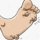

Wart & Corn
Wart
1.Cream Tretinoin 0.05% N=1 qd
Or Topical Drop Salicylic Compound N=1 bd
Or
Salicylic Acid 5gr
Lactic Acid 5gr
Flexible collodion 20gr
2.Oint Zinc Oxide 2% N=1
Corn & Callosity
1.Topical Drop Salicylic Compound N=1 bd
Or Topical Plaster Salicylic Acid N=10
or
Salicylic Acid 15gr
Lactic Acid 15gr
Flexible collodion 60gr
2.Oint Zinc Oxide 20%
نکته: زگیل عاملش ویروس معمولا درنواحی تناسلی و بدون درد است
نکته: میخچه در کف پا براثر فشار و کفش نامناسب ایجاد میشود.
نکته: محل ضایعه ابتدا با آب گرم شستشو دهد و سپس از محلول سالیسیلیک اسید با گوش پاک کن فقط بر روی ضایعه زده شود
نکته: برای جلوگیری از آسیب به سایر نواحی از زینک اکساید استفاده کنید.
نکته: پماد ساختگی است هم میتونین تجویز کنید.
نکته:طول دوره درمان حدودا 2 ماه است.
نکته: در نواحی ژنیتال و مخاط نباید مصرف شود.
نکته:زگیل قابلیت انتشار به سایر نواحی سایر افراد دارد.
نکته: برای جلوگیری از عود مجدد میخچه کفش مناسب تر استفاده بشه
زگیل پا
1️⃣ میخچه
2️⃣ Callus
3️⃣ Seborrhoeic keratosis
4️⃣ SCC
5️⃣ کراتوز پوستی
6️⃣ Prurigo Nodularis
میخچه
1️⃣زگیل
Callus2️⃣
3️⃣لیکن پلان هایپرتروفیک
Lichen simplex chronicus4️⃣
Palmoplantar keratoderma5️⃣
Gout and Pseudogout6️⃣
Melanocytic Nevi7️⃣